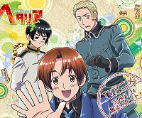
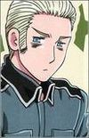
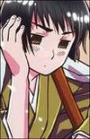
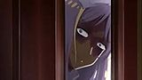
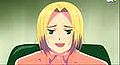
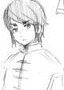
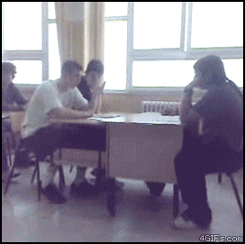
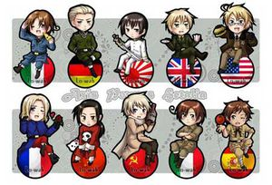
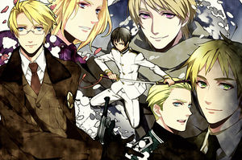

Hetalia
 De: La Frikipedia, la enciclopedia extremadamente seria.
De: La Frikipedia, la enciclopedia extremadamente seria.
| De la serie anime para todos:
|
| Hetalia
|
| 
|
| Los maricas en cuestión
|
|
| Género:
|
YAOI, Dominar el mundo
|
| Episodios:
|
Esta serie acabará cuando llegue el fin del mundo
|
| Autor del manga:
|
Hidekaz Himaruya
|
| Publicación:
|
Se desconoce el día que ocurrió la tragedia
|
| Publicado en:
|
Internerd
|
| Director del anime:
|
Bob Esponja
|
| Transmitido en:
|
Tu ordenador
|
| Ovas:
|
Decirlo sería spoiler
|
| Películas:
|
1, ya es mucho castigo
|
| Notas
|
Cuando Italia habla de pasta, se refiere a esta pasta
|
«Santo Dios, qué es esto??!!»
~ Tú al leer el manga o ver el anime
«Cásate conmigo nii-san... Casatecasatecasatecasate»
~ Bielorrusia intentando tirarse a Rusia
«Acepto, Bielorrusia-chaaan!!!»
~ Lituania creyendo que la cita anterior era para él
«Soy más fuerte que tú, macho patatas»
~ Italia Romano haciéndose el guay ante Alemania
«Osea, este articulo es poco cool!»
~ Polonia al leer este articulo
«Él es mi esposa.»
~ Suecia ,alias Su-san, después de casarse con Finlandia.
«Yo sé lo que pueden hacer y me quiero unir :D»
~ Tú queriendo ver Yaoi y disfrutar.
«¡Romano~! El jefe quiere jugar contigo un rato~ »
~ España en un típico día.
Hetalia va sobre que los países de todo este perro mundo se personifican y representan a su país y guerras. El titulo es un juego de palabras entre la palabra japonesa "hetare" (inútil) e Italia (o sea Italia inútil), aparte de todo esto y unas cuantas gilipolleces la serie es solo eso. Sus capítulos no duran más de cinco minutos. Esta serie tiene varias curiosidades entre una de ellas que los capítulos siempre acaban con un "continuará" y los subtitula Aino fansub. A pesar de todo eso tiene mogollón de fans (incluyéndome a mí por desgracia). Esta serie es muy recomendada para utilizarse como material educativo en las escuelas del mundo, ya que resume todo el rollo de las guerras mundiales de manera explicita, y mientras tanto el docente puede irse a preparar la siguiente clase de Historia.
Personajes Principales
| Personaje
|
Descripción
|
Feliciano Vargas |
«PAAAAAAAAASTAA ~~»
~ Italia en toda la serie
«PASTAAAA!!!!»
~ Italia adorando al Monesvol
«Doitsu!!!!»
~ Italia sobre sus preferencias
«Doitsu... Yo te quiero, pero no así...»
~ Italia cuando Alemania le pidió matrimonio, declarando así su homosexualidad
Es un idiota bisexual al que le gusta comer hasta tener dolor de barriga, cortejar mujeres y llevarse a Alemania a la cama dormir desnudo. Las cuatro cosas que más ha dicho en la serie de la serie son: Pasta, Ve~, Alemania y me rindo. Cuando era pequeño, su fama corrió y como hacía bien de imbécil. Actualmente, mantiene relaciones amorosas con Alemania. Tiene un hermano tsundere bisexual, como él. Nieto del Imperio Romano de donde los Italia heredan su bisexualidad rulo característico. La serie básicamente se trata de su amistad con Alemania.
|
 Alemania/Ludwig Beilschmit |
«ITALIA!!»
~ Doitsu en los "entrenamientos"
«Ludwig, no me gusta tu apellido... Deberías cambiarlo a Vargas...»
~ Italia , el sueño de las fangirls como terminará la serie.
Le gusta dar amor a los animales y el sadomaso. Siempre esta retando a Italia por las boludeces que dice este. Es un puto cabeza cuadrada, el más fuerte de toda la serie porque si te da una hostia la cabeza te da vueltas y pillas tortícolis, frecuentemente tiene que soportar las paridas de Romano. Tiene cierta posibilidad de que sea Sacro Imperio Romano, el novio amor de la infancia de Italia.
|
 Japón/Kiku Honda |
«Japón, Japón.. Quieres ver mi trasero???»
~ Italia insinuándose a Japón.
«Y que se supone que deba hacer después de verlo???»
~ Kiku tratando de que Italia de el otro paso.
«MARIHUANAAAA PAAAAAAAAASTAA ~~»
~ Japón después de pasar 2 días con Italia
Es el más normal de todo el grupo pero es emo. Pero por las caras que siempre pone se nota que no se empana de nada el tío. Siempre esta inventando cosas raras (submarinos, videojuegos, trasformers) Es el hermano pequeño de China, que lo encontró en el bosque pero luego este le mando a tomar por culo. Tiene dibujos eróticos en su casa, un día Italia los encuentra creyendo que era un libro de kamasutra para practicar con Alemania. Últimamente se le ha visto practicando poses explicitas con Grecia y Taiwán. Se ha visto que la mayoría de los personajes "quieren con él" en su calidad de Uke y aunque no lo crean 6 de cada 10 Dounjinshis tienen a Japón como Seme. Actualmente ayuda al yanki con su dieta, logrando en la serie una serie de episodios.
|
America/Alfred F. Jones |
«SOY EL HÉROE!!»
~ America haciendo alarde de alguien que no es
«¡China te elijo a ti!»
~ America lanzando a su pokémon favorito.
Alias El héroe o Intento de heroe. Se cree el mejor de todos los países aliados, el mas infantil de todos, sin duda. Siempre esta peleando con Inglaterra, mete en problemas a Canadá (su hermano). Es un gringo, tiene una obsesión con la coca cola y las hamburguesas. Es gay de los débiles y se lo ha visto que quiere con todos, la única vez que sacó su lado hetero fue cuando quiso con Vietnam pero ella pasó de él, ocasionando la Guerra de Vietnam. Últimamente se lo ha visto muy cercano a Japón.
|
Inglaterra/Arthur Kirkland |
«No conozco a Rock Lee»
~ Inglaterra dejando claro que sus cejas son así por casualidad
«Hola, Ciel Phantomhive!»
~ Inglaterra creyendose Alois Tracy
Este tsundere (sí, otro más chicos) le mola la magia negra, ve hadas, se emborracha, se vuela con facilidad, es fan de Los Beatles y por así decirlo es un ex-pirata. Siempre quiere pegar y fastidiar a Francia o America. Le tiene rencor a America por haberse echo mas alto, poderoso y independizarse al ser más joven que él. Es remono pero lo cagan esas cejas que le hicieron que parece Rock Lee. Hay quienes dicen que es Alois Tracy ya que esa bisexualidad... Debió de tener un gran trauma para ver hadas y un conejo verde de puta negra plana. A pesar de todo, se lo ve muy cercano a Francia.
|
Francia/Francis Bonnefoy |
«¿Las olimpiadas se hacían desnudos?»
~ Francia buscando una buena excusa para desnudarse
Un ramero. Se puede definir con esa palabra, porque en toda la serie sólo acosa a los demás países. Se sospecha que tiene la negra plana caliente. Sus canciones son las más sexys y siempre mete un Ahh~~ o un Ooh~~! en ellas.
|
Rusia/Ivan Braginski |
«Kolkolkolkolkol»
~ Rusia en modo yandere
«VODKAAA!!!!!»
~ Rusia sobre lo mucho que le gusta el vodka
«Quiero veros a otros en problemas...»
~ Rusia cada vez que sonríe.
Parece un lindo cachorrito pero a la mínima ocasión empieza a decir cosas macabras, como que quiere ver sufrir a todos, que se harán daño o que los va a matar, debe tener un trauma como los de Inglaterra. Cuando pone cara de yandere empieza ha decir kolkolkolkol/korukorukorukoru. Tiene 3 subordinados, dildos y esclavos sexuales, que son: Estonia, Letonia y Lituania (que es su puto personal), que siempre se cagan en las patas. También tiene dos hermanas. Que hablaré sobre ellas más adelante (y que viola con frecuencia, más no quiere ligarse con ellas). Quiere casarse con China y también violarlo aunque este sepa que en realidad es chico. Adora los girasoles, porque le recuerda que en su país también hay sol o alguna parida por el estilo. Siempre lleva una tubería y una picota encima para sodomizar a China, Lituania y a todos los que quieren ser uno con él.
|

China/Yao Wang |
«AAAAAAAAHHHHHH!!Aru~»
~ China cada vez que se le acerca Rusia.
«Un segundo... No es mujer!?»
~ Tú ante la dura realidad.
Un tío que parece joven y nena aunque sea el mas viejo de todos los países. Este fue el guey que sodomizó encontró a Japón. Rinde devoción a los pandas y Hello kitty. Como todos le tiene un miedo de los gordos a Rusia aunque también le tenga ganas y disfrute ser sodomizado por él. Cada vez que acaba una frase añade "Aru" que lo hace mas mono. Usualmente es confundido con un metrosexual ya que su seiyuu es mujer (la misma de la Taiwan, para empeorar), y más encima se pone una cola de caballo. Es además el principal pokémon de América como demuestra al ser elegido para atacar a los países del eje, carne de cañón.
|
Otros
Unión Soviética
| Personaje
|
Descripción
|
 Bielorrusia/Natalia Arlvoskaya |
«Nii-san casémonos!!»
~ Bielorrusia sobre su objetivo en la vida
«Largateeeee que soy gay!»
~ Rusia cada vez que Bielorrusia intenta zumbarselo
«Por culpa de esa perra ahora Lituania es heterosexual»
~ Polonia sobre el LietBela
«Ve~»
~ Italia dando su opinión
Alias Esa yandere que sale en Hetalia, Bielorrusia-chan!, La cabeza de semen, La destructora de dedos y La hermana loca de Rusia. Loca incestuosa que persigue a Rusia con un cuchillo para que se case con él. Por lo que él le tiene miedo y la evita, ella se la pasa acosándolo, pensando en él y tratando de matar a Lituania, no quiere meterse con él porque tiene la cosa más pequeña que Rusia, o sea no recibe el placer suficiente . Gusta de dejarle los dedos hechos puré (ella se los rompe y al masoquista de Liet le dan orgasmos). Siempre usa faldas largas (incluso en Gakuen Hetalia) cero exhibicionistas para evitar fanservice aunque los fans la dibujen en los Doujin como Chuck Norris la trajo al mundo
|
Ucrania/Yekaterina |
«Esa puta me ganó!»
~ Kurumu Kurono al ver que las tetazas de Ucrania eran más grandes que las suyas
«¡Dame un poco de tus tetas cabrona!»
~ Sakura Haruno pidiendo cosas imposibles
«No puedo Rusia-chan!»
~ Ucrania diciendo que no puede con la mega polla las facturas de gas que le trae su hermano.
«¡Solo muéstrale tus pechos!»
~ Ucrania haciendo que su hermano se familiarice ante el Mundo del Yaoi
La única normal del grupo soviético. Solo se que es tetona, tiene un tenedor y siempre esta llorando. Por 3 razones.- porque simplemente quiere llorar, está/estuvo siendo violada y de seguro, están/estuvieron devorando/martirizando sus tetas o hay un hombre cerca (frecuentemente Rusia) y se volverá a repetir la razón Nº 2. Sus tetas grandes son una mutación del Desastre Chernobyl.
|
Lituania/Toris Lorinaitis |
«B-B-Bielorrusia-chan...»
~ Lituania masturbándose en el baño cada vez que la yandere aparece
«Polonia!!»
~ Lituania demostrando que también le va a masoquismo
«Carajo, entiende de una vez que yo amo a mi nii-san!!»
~ Bielorrusia aclarando que ella ama a Rusia
Un mamón masoquista. Se puede definir con esa palabra. Es el moe por excelencia y esclavo sexual de Rusia y Polonia, quienes lo obligan a vestirse de maid. Durante la Gran Depresión, Rusia lo vendió y fue puto de Estados Unidos, pero luego lo devolvió. A pesar de tantos porque le excita ser golpeado por esta. Es el único de los Países Bálticos que sirve para algo ya que él es cocinero, ama de llaves, esclavo sexual, modelo de la ropa que usa Polonia y guerrero Berserk, cosas que los otros dos no saben hacer.
Cabe mencionar que le ganó el titulo de uke por excelencia a Japón, ya que a diferencia del chino, Lituania fue ukeado por una chica (patético!).
|
Estonia/Edward Bombon Bon Vock |
«Yo voy a preparar té.»
~ Estonia escaqueándose de la sesión de sadomasoquismo que le ha preparado Rusia.
«LETONIAAAA!!!»
~ Estonia sobre sus preferencias cada vez que Rusia se zumba a Letonia
Un tipo con pinta de nerd. Y lo es. Tiene un blog con fotos de ampays a todos los personajes de la serie y sus orgías gays. Por lo que Rusia lo hackeo, América lo ayudo y hicieron una película tripe X. Tiene otro blog con fotos de Ucrania haciendo fanservice. Es el creador de la Wikipedia y el Yahoo, Este es algo más que Letonia, es un paladín de nivel 80 en el WoW. Es bien puto y esto nos lo demuestra cuando dios le ofrece vivir en un mundo lleno de mujeres y él lo rechaza diciendo que le excita más ser torturado por Rusia y mirar la violación de Letonia, su Uke. Según algunos fans, es la encarnación de Edward Cullen ya que brilla, se desconoce su verdadera sexualidad y conoce una Bela que es inexpresiva (Bielorrusia).
|
Letonia/Raivis Galante en lo absoluto |
«Vendimos tu ropa al museo y... noooo!!!»
~ Letonia siendo sincero con su jefe (antes de ser violado por primera vez)
«Este articulo es una cagada...»
~ Letonia siendo sincero de nuevo (antes de ser linchado por los de la Frikipedia)
Inútil shota vibrador llorón que siempre se mete en líos por sus ataques de sinceridad, metiendo en problemas a Lituania y Estonia. No sabe hacer nada bien, menos recibir castigos por parte de Rusia. Otra razón por la que Rusia gusta follarselo es porque le roba las botellas de vodka. Es medio yandere (¿como no va a transtornarse?) pues atacó a Sealand con una flor.
|
 Polonia/Feliks Łukasiewicz |
«Voy a pintar mi casa de color de rosa!!»
~ Polonia demostrando lo macho que es
«Osea, me gustan los ponis y si son rosados o sea mejor»
~ Polonia sobre su obsesión con Mi Pequeño Pony
«O sea, te amo Liet»
~ Polonia sobre sus preferencias
«I'm gonna rise like a phoenix~»
~ Conchita Wurst la descripción de Polonia
Un travesti que habla como sacado del elenco de Gossip Girl (o sea, siempre dice "O sea, hello?"). Es inútil excepto porque quiere volver a su amigo Lituania gay ya que este heterosexual y sufre mucho porque Bielorrusia no le hace caso y se consuela con él. No hace NADA en la serie excepto comer Paluszki, hablar sobre "Mi Pequeño Pony", ser golpeado y vestirse de Bielorrusia para hacerlo con Lituania (sí...Lituania es tan idiota que no se da cuenta la diferencia entre Bielorrusia y su amigo con un vestido de ella y un pene de por medio). Si uno ve un libro de historia, verán que antes estuvo tirando masa con Ucrania, pero se traumó de las tetazas de esta y la cambió por Lituania.
|
Asia
| Personaje
|
Descripción
|
Corea del Sur/Im Song Yoo |
«Te amo, aniki!!!»
~ Korea segundos antes de violar a China
Un asiático que esta enamorado de China (a quien manosea y sodomiza) y anda plagiando a Japón. Tiene un fetiche con los pechos planos. Es un personaje tan pero tan idiota que los coreanos se ofendieron y demandaron la serie. Ahora solo lo podemos ver en el ending como un chibi más.
|
 Hong Kong |
Cejón totalmente copiado de Kaoru de Mujin Wakusei Survive. Las cejotas se las debe gracias a Inglaterra, ya que fue su perro propiedad durante años. "Muy amigo" de China que al igual que Japón, también anda de mala hostia. Tiene tendencias piromaniacas. Las fans lo emparejan con Islandia
|
Taiwan |
Pinche jessi asiática que esta enamorada de Japón e intenta volverlo hetero. Desde que en el manga salió una imagen en la que defiende a Japón de China los fans los emparejan. Es mas bestia que Hungría pero ella si es femenina y le dan ataques de nervios peores que los de Lituania (comprobado en el CD Drama). Para que Japón siga haciendo yaoi, los fans la emparejan con Hong Kong.
|
Vietnam |
Otra asiática quien siempre anda de mala hostia y solo ha salido en sketchs del creador de la serie. Su único merito ha sido ownear a América en la Guerra de Vietnam, quitándole el complejo de héroe por solo unos segundos.
|
Otros idiotas
Prusia/Gilbert Beillschmidt: El hermano de Alemania, un cabrón a toda regla, se pasa el día entero metiéndose con todo el mundo, mirándose en el espejo y se cree el mejor. Su único buen momento es cuando era niño y agarró a Hungría ya saben donde, porque pensaba que era hombre y creía que ese era su punto débil. Unos dicen que seguramente es el creador de la Frikipedia, otros, que es Dios. Es un narcisista que intentó violar a Hungría después de que a esta la violaran 15 negros, pero al darse cuenta de que tenía tetas, se fue hecho un fiasco (Pobrecillo, su homosexualidad es demasiado latente).
Canada/Matthew Williams: Tipo que se parece físicamente a su hermano, pero es un fantasmita con una voz tan suave que si se lo follan en un callejón oscuro nadie lo escucharía. Siempre lleva un oso que nunca se acuerda de su nombre. Una pregunta: Si es el hermano de America, ¿cómo es que no comparten apellido?
Canadá cada vez que es confundido con Estados Unidos.
Italia Romano/Lovino Vargas di Carriedo: Hermano de Italia y gigoló por excelencia. Nadie sabe si es un cagao o un valiente, pero esta claro que es un tsundere. Este tío vivió con España, pero a diferencia de Chibitalia, no creían que era una chica. Este tío también es un idiota que delante de Alemania se hace el machote, pero si aparecen Francia o Inglaterra se caga en las patas. Odia a Alemania y odia las patatas (se cree que la culpa es de los Países Latinos). A pesar de su independencia, sigue reuniendose con España.
Bélgica: El interés húmedo de ChibiRomano (sí, era bisexual hasta que España lo transtorno). Aunque España y Romano andan tras ella para hacer una orgía de tomates, ella es masoquista como Lituania y prefiere a Holanda, quien la ignora. Tiene 2 hermanos que son Holanda y Luxemburgo.
Finlandia/Tino Väinämöinen: Niñato que se disfraza de Santa y da regalos (principalmente a los náufragos). Es esposa de Suecia (alias Su-san, lo cual me hace dudar quien realmente es la esposa...) y tienen un precioso hijo llamado Sealand (claro, fue comprado en internet, como cualquier otro niño) además de ser dueño de una perrita llamada Hanatamago ¿A quién le importa? que juntos son como una familia. Sin mencionar que hace apariciones extras como Finny de Kuroshitsuji.
Suecia/Berwald Oxenstierna: Aunque haga cara malvada que hace competencia con la de Rusia o sea, "la competencia del siglo" y tenga la actitud fría (más fría que tus manos en el teclado). Tiene un lado amable y hace muñequitas para vender en el tianguis. Su-san, heroicamente huyo con su esposa (Finlandia) lejos de Dinamarca, y fueron libres e iniciaron una nueva vida como marido y mujer, compraron un hijo (Después de darse por vencidos de intentarlo una y otra vez sin resultados) y se adueñaron de una perra cachorrita. El autor confirmo que es gay que tiene sentimientos hacia Finlandia, solamente que su timidez lo hace dudar si siente lo mismo por él. Las fans, limpiándose el culo con ignorando eso, lo emparejan con Dinamarca.
Islandia/Emil Steilsson: Un albino zoofilico por un frailecillo, que es el hermanito menor de Noruega. Este nada más es importante porque salió en la película, y no se sabe si tiene los ojos azules o violetas, pero a nadie le importa. Es el más baby de los nórdicos y el más bajito (Hey, ¡es más bajito que Finlandia!) y se cree un adulto aunque es un adolescente. Tiene cara de uke y quiere algo con Hong Kong, aunque apenas si lo conoce.
Dinamarca/Mathias Køhler: Un güerillo que se cree el rey del norte con un peinado chido, es muy alegre, hablador y entusiasta pero también es muy mando al punto de que hizo que Finlandia y Suecia se cansaran de que el danes les prohibiera jugar juntos, dice ser el mejor amigo de Noruega y ni sabe que el otro antisocial se burla diciendo que es un inteligente y lo odia.
Noruega/Lukas Bondevik: Otro de los antisociales de la serie, nadie sabe lo que piensa y tiene una mirada de madurez. En su ser, se desvive diciendo que Islandia es su hermano menor y quiere ser reconocido por ello haciendo que se gane una cara de amor por parte del islandés, siempre trae un traje de marinerito que le presto Quico del chavo del ocho con todo y sombrerito, es el tercero más alto de los nórdicos y tiene el cabello color blanco/rubio, se podría considerar el personaje "menos idiota" de la serie. Se creé que tomó lecciones de como ocultar las expresiones con Chuck Norris, ya que siempre tiene la misma cara. Además, es amigo de cejotas ya que ambos son ukes ven criaturas mágicas. A pesar de repetirle a Dinamarca lo estúpido que es, pegarle y demás, se nota que siguen siendo grandes amigos.
Hungría/Elizabeta Héderváry: La machurra bestia guerra que antes estaba casada con el mongo de Austria y tiene un fetiche con el yaoi. Si lleva una sartén es ella no lo dudes. Aun así, gran parte del elenco quiere con ella, incluso los gays. Es la responsable de mariconear a Italia al travestirlo y volverlo puto. Además es tan tonta que creía que ella era un chico hasta que le llegó la pubertad y un par de cosas que Prusia notó y le saco provecho de manera extrema. A pesar de que ella ama a Austria, los fans lo emparejan con Prusia, quien la ama pero lo niega.
Austria de peque... ¿No se parece bastante a cofcofChibitalia?
Austria/Roderich Edelstein: Un tío que se cree rico pero es re pobre. Antes solía ser mas shota y moe que Chibitalia y todos lo andaban tomando por culo, sobre todo Hungría (más tarde se enamoraría y se le caerían las bragas por él). Ahora es un mongo aburrido (porque se le acabo el LSD) que sabe tocar el piano y otras cosas con Hungría. También se le da por el machismo y la explotación de animales menores, al maltratar a Chibitalia, pero paró al ver que era un chico, demostrando que es un puto machista.
Seychelles: La caliente plana zoofilica por el atún que se supone es negra y baila el Waka Waka, pero como los creadores de la serie son racistas, la ponen trigueña. Sale en el videojuego Gakuen Hetalia donde vuelve bisexuales a todos (incluso a Italia, quien quería llevarla al Club de Manga a comer galletas y quien sabe que mas) y tiene que elegir si se la tira Inglaterra o Francia. Hay otro final en el que es esclava de las potencias del eje, Italia y Japón están felices con esto, menos Alemania, quien no cayó a sus pies como los otros. Al final se queda con Francia (qué puta) porque hacia mejores sesiones que Inglaterra, pero aún ella le pone los cuernos al chulo con el cejón para tomar el té. Le ganó el premio de la más puta a Hungría porque es la única chica que tiene mas imágenes con todos los personajes hombres en... situaciones explicitas... especialmente tríos con Iggy y Francia, además es el personaje mas odiado por las fangirls por puta y arruinayaoi (sí, yo también la odio).
España/Antonio Fernandez Carriendo: Amante de los tomates que quiere tener a las dos Italias, pero a Romano ya lo tiene. Fue el chulo que cuidaba a Italia Romano y es el responsable de volverlo un gigoló marica. Su fetiche es jalar del pelo a los Italias y provocarles orgasmos. Según las fans, tiene el mejor culo de la serie. (No, en serio).
Cuba: Negro anti-americanos que solo piensa en dar hostias. Canadá cree que le da hostias por que le lía con su hermano, pero Canadá no sabe que se lo tira de noche que él no les confunde, le da ostias porque quiere y porque es comunista.
Egipto: Africano que baila el Waka Waka y lo único que hace es vender jarrones de mierda como consoladores. Se cree que el inventó las cartas de los Dioses Egipcios.
Chipre: Recogido de Turquía y mini-país. Sealand lo odia porque él si fue reconocido.
Rumania Wey que se cree vampiro y gusta de chuparle el pene la sangre a cualquiera que se le cruce.
Suiza/Vash Estampida Zwingli: Pistolero amargado. Se sospecha que su autentico nombre es Edward Elric, es un tacaño que cuida de Liechtenstein aunque tiene otras tendencias con Austria. Cuando Pianistaman no anda de buenas se coge a la loli de nombre raro que mencionaremos abajo.

Este es Suiza si lo llaman tacaño.
Liechtenstein: Loli que fantasea con Suiza. Se cree que puede ser el tercer anticristo y que dominara el universo.
Grecia: Un obsesionado a los gatos, se pasa el día de siesta en siesta y durmiendo en la tumba de su madre (más macabro que Rusia). Su único merito ha sido ayudar a Japón en cada capítulo y tener una abundante cantidad de gatos.
Turquía: Un tío que se cree El Zorro. Enemigo de España, se quería tirar a Romano, pero el ramero España no le quiso dejar.
Australia: Es un tío obsesionado con los animales peligrosos, lo raro es que lo quieren mucho. Es el hermano de Wy, como muchos odia a Inglaterra y es su ex-colonia.
Sealand/Peter Kirkland: Pinche shota que se cree país y es hermano/hijo/hijo adoptado/puto /recogido de la calle de Inglaterra (¿las cejotas dicen algo al respecto?).Su mayor ambición es ser violado por Letonia ser más grande que Inglaterra.
Suverga Seborga: Niñato que siempre anda con un flotador y hermano/puto/recogido de los hermanos Italia, solo que su rulo esta mal hecho. También se cree gigoló y le gusta Wy.
Wy: Hermana/Puta/Recogida de Australia. La reconocieron solo que Sealand no la odia, además a pesar de ser tan chica ya anda vestida como perra a todas partes y se cree que ya esta grandecita la mocosa.
Kugelmugel: Un wey que es personaje nuevo a pesar que parezca niña, tiene dos trenzas y adora, adora, ADORA el arte no se sabe mucho de el porque es un personaje nuevo pero se pretende que podría ser hermano de Australia.
Monaco: Hermana de Francia. Se cree que siente algo por Seborga. Es amante del poker, y apuesta citas.
Holanda: Hermano menor de Bélgica. Le gustan las niñas, fuma en pipa y le gustan los conejos. Ama el dinero. Le renta habitaciones a Pedobear.
Mini historias
 Así era Alemania antes de integrarse a la sociedad (click para ver)
Después de cada capitulo hay un especial de 2 minutos en el que hablan de cosas extra de la serie, todo es relleno, pero en he aquí algunos de ellos:
- Chibitalia: Es otro juego de palabras, en este caso entre chibi (pequeño) e Italia (Italia tiene algo pequeño) que es de cuando Italia era chiquitito y muy gay que parecía nenita, cuando Austria le tenia esclavo y se acostaba con Sacro Imperio Romano.
- La limpieza del sótano de América: A América se le ocurre la brillante idea de limpiar su sótano, debido a que ya estaba aburrido de jugar con el masoquista Lituania ya que a la hora de la verdad este lo llamaba "Polonia" o "Bielorrusia-chan", limpiando el sótano encuentra una serie de objetos que le hacen recordar épocas de su vida, entre estos están:
- Una figurita de madera (soldado), que le regaló Inglaterra que le hizo recordar su pésima infancia junto a este último.
- Ropa decente, que le hizo recordar cuando Inglaterra lo quiso vestir a la moda inglesa y cuando estaba en plena juventud.
- Un arma (parecida a una Spirngfield o una Misón 1891/30) que le hizo recordar la época de América revolucionaria y cuando estaba rebelde y se independiza.
Al final bota todo a la basura para no fantasear pensar más en Inglaterra pero el lacayo masoquista que se corre por el travesti y la yandere lo devuelve todo al sótano por idiota.
- El jefe España y Chibi Romano: Esto es lo mismo que Chibitalia, pero es con su hermano, Romano cuando era sirviente de España.
- Nekotalia: Versiones gatunas de los personajes (Italia, Romano, Alemania, Japón, Rusia, Bielorrusia y hasta Mónaco) que se pueden comunicar de manera telepática y algunas veces oral, también oral cuando tienen que hablar con el Dc. Dolittle.
- Japón-kun y América-san: Los episodios especiales sobre Japón y Estados Unidos, donde se muestran sus diferencias culturales y demás.
Videojuegos
Hetalia, ya ha sacado videojuegos, todos ecchi:
Gakuen Hetalia
«No! Me esta tocando mi Vallee de Mai Natural Reserve!»
~ Seychelles siendo violada por Francia, en Gakuen Hetalia
Es un juego en el que la negra caliente Seychelles va al Gakuen Hetalia donde en su primer día conoce a Inglaterra quien la vuelve su territorio porque nunca había visto a una negra en su vida y ella no quiere por las cejas de este. Luego se pierde al entrar y conoce a China pero ella en vez de responderle se queda mirando como lela su panda porque nunca había visto un panda, solo tortugas, el pito de Francia, atún y mas tortugas. En la clase le va mal por su ridículo escudo y en eso se tropieza y conoce a Italia y Japón, quienes la invitan al Club de Manga a ser violada por ellos ya que se hartaron de los culos comer galletas y ver anime. Obvio que la negra ignorante no sabe que es un manga y Japón casi se muere. Luego se encuentra con Francia e Inglaterra otra vez y Francia quien es su chulo intenta violarla luego Inglaterra pide cambiar turnos y la negra caliente los manda al carajo. Cabe destacar que todos ellos la compadecían por ser propiedad de Inglaterra.
El juego se cancelo porque no había yaoi por razones desconocidas, pero en la web de Himaruya se encontró parte del scipt con escenas inéditas como estas:
- Seychelles confunde a Austria con Australia y este la manda al carajo.
- Rusia intenta ser uno con ella sin éxito.
- La negra se vuelve compañera de cuarto de la fujoshi, digo Hungría.
- En el Club de Manga, Alemania casi la mata porque ella era muy amiga de Italia.
- Conoce a America, quien a diferencia de Doitsu, no le armo una escena de celos por ser la puta de Inglaterra.
- Inglaterra intenta
violarla ganarse su amor, sin éxito obvio.
- Francia si lo logra, porque ella es la puta y él su chulo.
- España tiene ropa interior de tomates.
En el Gakuen Hetalia PSP a Seychelles le crecen los senos, se blanquea a lo Michael Jackson y no hace nada excepto planear una orgía fiesta para los otros Países. En el camino se acuesta con los Aliados y los Axis (se nota que le van a la carne y el pescado).
Noto-sama
Este juego trata de un travesti quien junto a Himaruya van al Gakuen Hetalia a desnudar a cuanto personaje de la serie encuentren. La única parte interesante es cuando se rapean a Prusia.
Nyotalia
Nyotalia es la versión travesti una cagada que salió de la mente a Himaruya donde todos aparecen de sexo opuesto (gracias a esto, se pudo descubrir que China era hombre porque en el Nyotalia es mujer... a no ser que haya hecho el jutsu clones de sombra). El único gilipollas país que puede entrar en contacto físico y sexual con ellos es Estonia. Pasan cosas raras como que la versión femenina de Veneciano es una chica cabrona y trastornada y no es cobarde, la versión de Estados DesUnidos no tiene lentes pero la de Inglaterra si, el Nyotalia de la tetona Ucrania es igualito a Rusia. (La única que no cambia es Belarús, a quien lo importa si Rusia es hombre, mujer, travesti, un perro o que tenga 30 penes y 2 vaginas, siempre lo amará).
Hetalia: The Beautiful World
Aquí, los personajes fueron maquillados por Edward Cullen, porque todos brillan como él. También el diseño de los personajes cambia:
- Finlandia tiene ojos violetas.
- España está mas tostado. Ademas, en el episodio 11 se descubren sus músculos.
- Grecia, Chipre, Turquía y Seychelles también se todtan.
pero nadie lo nota porque todos están ocupados babeando por España...
- A Italia Romano le cambian los ojos de marrones a verde amarronado.
- Alemania está mas fuerte que Prusia.
- Prusia deja de tener los ojos rojos para tenerlos medio violetas.
- A Inglaterra se le desarrollan las piernas.
Además de eso, se encuentran cosas interesantes en esta temporada:
- Que Prusia
es heterosexual, ya que mira revistas porno con mujeres acompaña a su hermano a misiones militares.
- Que Alemania
es gay es muy serio en sus misiones, ya que cuando Prusia le muestra la revista con una mujer, este le dice que la guarde. En episodios más adelante, le pide matrimonio a Italia.
- Estonia es Edward Cullen, ya que ambos brillan.
- Que Japón se fue a vivir con Estados Unidos. Algunos creen que es por el mismo motivo que Suecia y Finlandia.
- Canadá tiene su propio club
donde solo hay un miembro, él.
- Inglaterra se caga mirando las películas de terror de España.
- Austria y Hungría están saliendo.
¿Por qué gusta Hetalia?
 Los protas en versión chibi.
- El relleno curiosamente NO es una mierda.
- PASTAAAAA!!!!!
- El yaoi en esta serie es lo máximo.
- Cuando aburre, Italia y Alemania hacen una escena gay y asunto arreglado
- Tiene un sentido de humor bastante extraño y malo, aun así nos reímos.
- VODKAAAAA!!!!!!!!!!!
- Hungría esta buenaza.
- Ucrania aun más.
- Liechtenstein también (para Pedobear y los pedofilos).
- Te da las soluciones rápidas para la tarea de historia.
¿Sabías qué...
- ... Todos los hombres de la serie son gays?
- ... Nosotras las fangirls queremos ser "x" país para amar a su respectiva pareja?
- ... y también queremos matar a todos los países femeninos?
- ... Rusia mata a Estonia y Letonia en Gakuen Hetalia?
- ... Seychelles fue Morocha Amorocha en La casa de los dibujos?
- ... Italia levantaba la industria de la pasta en un 83%?
- ... Francia tiene fotos pornográficas online?
- ... Francia tiene fotos pornográficas online no solo de mujeres?
- ... Polonia es el autor de todos los doujinshis de LietXPol?
- ... incluso hizo uno en el que mataba a Bielorrusia?
- ... Suiza es producto de una orgía entre Vash Estampida y su hermano?
- ... Suiza es Edward Elric?
- ... Prusia es en realidad Hidan?
- ... Polonia se hizo gay después de estar con Ucrania?
- ... América es en realidad Ronal McDonald?
- ... Lituania piensa en Bielorrusia las 24 horas del día en su baño?
- ... Francia ha posado en Playboy?
- ... y al final le da cáncer de próstata?
- ... los Axis Powers nunca dejaron de ser metrosexuales?
- ... Italia se metió a un concurso de gilipollas y perdió por gilipollas?
- ... el ganador de dicho concurso fue Lituania?
- ... Italia es adorador del Monstruo del Espagueti Volador?
- ... Seychelles bailó el Waka Waka durante el Mundial del 2010?
- ... Japón tiene enfermedades venéreas?
- ... y es porque fue violado por Grecia (no olviden que el hace zoofilia con sus gatos)?
- ... Grecia violó a todos los gatos de Nekotalia?
- ... Alemania fue reclutado junto a Terminator?
- ... Ucrania murió porque sus tetas explotaron?
- ... Japón SÍ consiguió follarse a Taiwan pero Himaruya lo censuró?
- ... Si nombras a Francia nii-chan 4 veces en medianoche delante de un espejo y dando vueltas... Este viene y te viola?
- ... y que con Alois Trancy pasa lo mismo?
- ... Lituania acepto meterse a la cama con Polonia?
- ... pero en el momento de la verdad, lo llamó Bielorrusia-chan?
- ... Estonia representa a toda persona que pase mas de 6 horas frente a un ordenador?
- ... Se cree que Grecia si pudo tener sepso con Japón?
- ... y esto se puede comprobar en una tira del manga?
- ... Bélgica va a suicidarse porque no sabe si elegir España, Holanda (
aunque sean hermanos)o a Romano?
- ... Canadá y Vietnam son buenos amigos porque nunca nadie los tiene en cuenta y es un punto en común?
- ... Lo anterior es mentira porque ambos olvidaron sus nombres y no se hablan por temor a confundirse?
- ... Hatta futte hatta futte hatta futte pareddo?
- ... Himaruya ha recibido amenazas de muerte de Al-Qaeda si se atreve a representar a los países árabes?
- ... Y que ya sobrevivió a tres atentados de la Hermandad Musulmana Turca?
- ... Que Hetalia es una orgía gay?
- ... No sacan a los latinos porque no merece la pena y ya tienen bastante con los europeos?
- ... A veces quiero golpear a Italia por idiota pero tengo miedo de que Alemania lo defienda?
- ... El romance entre Veneciano y Alemania está prohibido
por Romano?
Sabes que has visto demasiado Hetalia, cuando...
 Así se vería la serie si dejaran de hacer
pendejadas y se pusieran a matarse entre sí.
- ...Ya no llamas a los países por su "nombre nacional", sino por el propio.
- ...Odias a "x" país por lastimas a "y" país.
- ...Tienes la colección completa .de papercraft y te creas tus propias historias con ellos.
- ...Haces infinitos fics de USAxUK.
- ...Según tú, TODOS los chinos terminan sus oraciones con "aru~".
- ...No puedes oír el nombre de un país sin recordar algo de Hetalia.
- ...Te sabes completo el Ending de Hetalia, con todas sus versiones.
- ...En clase de Historia imaginas lo que se dice tipo anime Hetalia.
- ...PONES atención en clase de Historia hasta el punto de brillar de emoción.
- ...No puedes tener un plato de pasta en frente sin decir/pensar "PASTAAAA~!" estilo Veneciano.
- ...No puedes dejar de pensar en un personaje cuando ves un panda, una tubería, un tomate, una salchicha, vodka, pasta, una sartén, un pene, unas tetas, etc.
- ... Emparejas a tu país con tu personaje favorito.
- ...Nunca en tu vida te han gustado las bebidas embriagantes, pero piensas hacer una excepción respecto al vodka.
- ...Quieres vivir en Italia, Alemania, Japón, América, Inglaterra, Francia, China, Rusia, Austria, Grecia, etc etc etc. más que nunca en la vida.
- ...Te asustan los bielorrusos y crees que todos quieren ser uno con los rusos y maltratan lituanos.
- ...No puedes oír en una misma frase "Alemania e Italia" o "América e Inglaterra" o "Austria y Hungría" sin que empieces a fantasear.
- ...Ves un pollito piensas en que Prusia aún debería existir.
- ...Tratas con mucho fijador y un enrulador de pelo hacerte un rulito parecido al de Italia, Canadá o Grecia.
- ...Vas caminando por la calle y de repente gritas "PASTAAA~~" o "VODKAAA~~"
- ...Empiezas a dar datos freak (de esos que aprendes viendo Hetalia) en la clase de Historia.
- ...Les dices a tu familia y conocidos "¿No quieren volverse uno con Rusia?"
- ...Dibujas a Inglaterra borracho y en falda en la mesa de tu sala.
- ...Tu risa malvada ahora es kol kol kol kol en vez de Muahaha.
- ...Quieres tener todas las mascotas que aparecen en el cómic, incluso el ovni y Yousei san.
- ...Le llevas la contra a la gente insistiendo que los unicornios, hadas y demás existen.
- ...Todas las tardes tomas el té como buena dama o caballero que eres.
- ...Los chicos con cejas pobladas ahora te parecen MUY atractivos.
- ...Le pides a un amigo que le de vueltas a la mesa en la que estás parado mientras tú cambias el bombillo de luz.
- ...Ríes como un idiota ante un libro de Geografía.
- ...Ríes como un idiota ante un libro de Geografía creyendo que ahora el mundo es una orgía gay
- ... De vez en cuando imaginas a los políticos comportarse como niñatos, homosexuales, pedofilos y estúpidos (no como en realidad lo son sino al estilo Hetalia)
- ...Ahora la pasta es tu base alimenticia.
- ...Ves a alguien de otro país (Inglaterra, Francia, etc.) no puedes evitar compararlo con el personaje respectivo.
- ...Dudas de la sexualidad de los chinos y los polacos.
- ...Te hubiera gustado nacer 80 años atrás.
- ...Quieres disfrazarte de Santa o algo parecido para Navidad.
- ...Escuchas música de países nórdicos o cosas así sólo porque te imaginas que los personajes son los que tocan.
- ...No puedes ver noticias mundiales sin relacionarlo con Hetalia, e independientemente la situación que sea, imaginas a los personajes haciendo eso.
- ...Estás convencido de que toda la gente en Austria son más hombres muy rectos y elegantes, y que la mayoría de población en Hungría son mujeres rudas.
- ...Ya no puedes ir a un restaurante italiano sin poner cara de friki.
- ...Piensas que el mundo fuera mejor si fuera como Hetalia.
- ...Los chicos que usan lentes te parecen atractivos.
- ...Luego de dar una idea random que sabes que no va a funcionar dices "En resumen, soy un héroe!"
- ...Para ti todo se originó en Corea y cuando alguien te pregunta de dónde viene "x" objeto/animal/lo que sea, le respondes simplemente "Eso se originó en Corea".
- ...Ya no ves los mapas como antes, si no como una gran orgía gay.
- ...Odias a Seychelles por enredarse, acostarse y revolcarse con todos los países, ya que malogró tu yaoi.
- ...Los coreanos para ti dicen todo el tiempo "Da Ze!" y tienen un rulito con vida propia.
- ...Tarareas/cantas suavemente como estúpido el ending de Hetalia cuando la clase de Historia termina o en la clase misma.
- ...Pensaste como se vería tu propio país si estuviera en Hetalia (incluso las parejas que tendría).
- ...Te sabes la canción de Italia a Alemania (Doitsu~~ Doitsu~~ Doitsu wa itokoro dayo~~).
- ...Ves tus útiles escolares (Made in Taiwan, China, Corea etc...) te imaginas al país haciendolos.
- ...Ya no tarareas las canciones como "la la la la"; ahora tarareas "ve ve ve ve" o "chigiiiii", aunque todos te vean raro.
- ...Tu imagen de los hombres ingleses cambio de "estilo Austin Powers" a "ebrios semidesnudos con trajes de mesero" (delantal y moño negro).
- ...Para ti los bielorrusos dicen "Kekkon, kekkon, kekkon"
- ...Si alguien toca algún rulito de tu cabello te sientes violado,
- ...si te lo arranca te mueres.
- ...No puedes ver banderas sin imaginarte al pendejo que lo representa.
- ...Alucinas cuando ves una bandera italiana al lado de la alemana o la estadounidense al lado de la británica.
- ...Ves un conflicto de países en las noticias, te imaginas a los personajes peleando.
- ...En clase de Historia alucinas con parejas hetalianas.
- ...Ver una bandera blanca te recuerda a Italia rindiéndose -pata ta ta ta pa ~ -
- ...Si tienes personajes inventados con nacionalidades italiana y británica, te carcomes por dentro al querer cambiarle al británico su nacionalidad por alemán.
- ...Comienzas a pedirles imposibles a las estrellas fugaces como Alemania.
- ...Te hiciste alcohólico por Rusia.
- ...Comienzas a imaginar hadas y hablas solo tantas veces que nunca llegarás a salir del manicomio.
- ...La CNN ahora te da risa y tus padres te miran con cara de wtf?
- ...Escuchas a Hugo Chávez te acuerdas de ese chiste del "Por qué no te callas"
- ...Y te dan ganas de que pongan a los Países Latinos de una puta vez.
- ...Apoyas la relación de todosxtodos con los países.
- ...Ves las noticias internacionales y disfrutas viéndolas.
- ...Preguntas en clase de Historia a tu maestro sobre tu país favorito (y toda su historia si es posible).
- ...Cualquier tarea/reporte que tenga que ver con Historia tiene hints de yaoi.
- ...Te sabes las banderas de los países cuando antes no las sabías.
- ...Al ver que nombran la capital de un país no haces más que pensar mal.
- ...Dibujas a todo rato en tu libreta durante clases a los personajes de Hetalia; y si no sabes, haces mochis y monitos de palitos con rizos, lentes, lunares, etc.
- ...Tienes miedo de probar el té negro estilo desayuno inglés que compraste hace tiempo.
- ...Perdiste el juego (you lose the game)
- ...Trabajar para "relaciones internacionales" parece más atractivo ahora.
- ...Quieres aprender todos los idiomas, incluyendo el dialecto pruso del alemán.
- ...Convences a tus amigos de acompañarte a comprar un pollo la próxima semana, llamarle Gilbird o Pierre (aunque sea pollo y no pájaro) y quedar en llevarlo a la escuela de contrabando para que todos lo vean.
- ...Visualizas a tus amigos que vienen de otro país y van en tu salón lo conoces como los personajes de Hetalia, llegándole a preguntarle al ruso primero de que te enteras que lo es: "¿¿Te gusta el vodka!?!?" "Hm..sí? Es de lo mejor!"
- ...Aunque sepas datos interesantes de Historia, no te acuerdas de las fechas y todo en desorden (datos random).
- ...Piensas viajar cuando crezcas a muchos países y conocer gente para comparar.
- ...Guardas el ending en tu teléfono y lo pones de tono de mensajes, llamadas y alarma de despertador.
- ...Estás aburrido en clase, cierras los ojos y dices "Hera Hera Hera~"
- ...Alguien te lastima y sales corriendo gritando "Doitsu Doitsu!!"
- ...De igual forma, imaginar a todos los habitantes de X país (Italia, Alemania, etc.) tal cual la imagen del anime.
- ...Gritar ¡Chigi~! siempre que estás asustado o enojado.
- ...Lanzar datos frikis sobre la Historia o costumbres de ciertos países de vez en cuando.
- ...En Historia ibas a sacar 10 pero te sacan 5 porque a cada palabra que decía el maestro decías:"pero en Hetalia..."o "maestro... miente! en Hetalia..." o "Así!... yo vi eso en Hetalia" o incluso "eso... lo vi en Hetalia, VERDAD!?"
- ...Cada vez que tu amigo dice Francia tú gritas "Inglaterra" solo para llevarle la contraria.
- ...Cada vez que alguien dice que Hetalia es absurdo o inservible, tú le respondes:"No es cierto, es educativo" y de pasada le das una clase de Historia.
- ...Alguien te dice que estás enajenado con Hetalia le respondes: "no es cierto, que piense y hable de eso todo el día no quiere decir que lo esté, solo que a mi me interesa mi educación y no ser un burro e ignorante como tú, además, me dice eso alguien que sacó 0 en el examen de Historia, vee?!'"
- ...Conoces países que nadie mas conoce gracias a Hetalia (Seychelles, Islandia, Prusia, Wy, Seborga, Liechtenstein, etc.)
- ...incluso a Sealand que ni siquiera es un país.
- ...Estás pensando seriamente en estudiar algo relacionado con la Historia o relaciones internacionales.
- ...Has soñado algo relacionado con Hetalia.
- ...Si alguien dice Canadá tú dices ¿Quién? y te ríes como tonto aunque nadie haya entendido el chiste.
- ...No te parece mala la idea de que el mundo se vuelva uno con Rusia (excepto Bielorrusia y gritas "Kaetteeeeeee!!!").
- ...Hartas a tus pobres amigos de estar hablando de países (y que ellos no te entienden nada )
- ...Te compras una bufanda y no te la quitas incluso si estas a 45°.
- ...Tienes ganas de saltar desde un avión gritando "VODKAAAAAA~" creyendo que saldrás ileso.
- ...Te entra una gran emoción al comer comida extranjera.
- ...Te pasas todo el día cantando alguna canción de los CD de Hetalia o de algún MAD que viste en internet.
- ...Cargas una sartén a todos lados por si ves a Prusia.
- ...Crees que los lituanos son sadomasoquistas.
- ...Ya no tienes intención de comer nada proveniente de Inglaterra.
- ...Ves la independencia de tu país como el final de una relación amorosa.
- ...Ahora te comes los tomates como si fueran manzanas.
- ...Ves a un francés en la calle y sales corriendo por tu vida/pureza/decencia.
- ...Arrancas el grifo del baño de tu casa y lo llevas a todas partes.
- ...Te compras un oso polar de peluche, lo llamas Kumajiro y lo llevas contigo siempre.
- ...A varios compañeros les empiezas a llamar Rusia, Hungría, Letonia, etc
- ...Empiezas a hablar en modo Hetaliano: Los esposos Suecia y Finlandia compraron una casa.
- ...Tienes una botella de vodka, hamburguesas, té, mochi, etc. en tu cuarto.
- ...Si te dicen algo sobre un país (ejemplo: "Francia es el país del amor") tú inmediatamente gritas "pero es un pervertido".
- ...Para todo sacas frases como , PASTA!!!, kolkolkol, aru, etc
- ...Cada vez que ves a un pervertido piensas que debe ser francés.
- ...o que uno que recoge niños por todas partes tiene que ser chino.
- ...Acosas a tu profesor de Historia con preguntas de todo tipo.
- ...Dices "Maple!" cada vez que te pegan o te lastimas.
- ...Terminas de leer todo este rollo y te das cuenta que mitad de las cosas te suceden a ti.
- ... Sabes del video pirata que se compro una chica americana y del episodio perdido
...que ahora quieres ver.
Véase También
Enlaces Externos
Autor(es):
- Fordus
- Reybendayana
- Dark temptation
- SakuraMiya
- Kevrochi
- Harry El del Pote
- Meloinventotodo
- Gñapero Solitario
- Lol.Friki
- Seishi
Frikipedia 2005-2016, Licencia
GFDL 1.2 - Extraído por FrikiLeaks